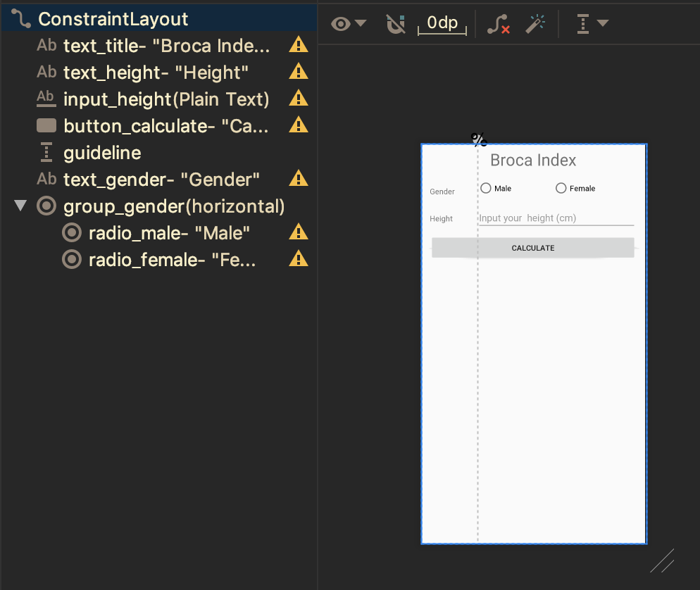

Fragment Listener
Jika sebuah fragment membutuhkan komunikasi event dengan activity, fragment sebaiknya mendefinisikan interface dan menyatakan activity harus mengimplementasikan interface ini.
Percobaan
Tambahkan fragment baru pada package
fragments, dan beri namaMenuFragment. Perhatikan gambar berikut untuk pengaturan pembuatan Fragment.
Buatlah layout seperti pada gambar berikut.

Bukalah file
MenuFragment.java, perhatikan kode template yang digenerate oleh Android Studio.Fragment yang dibuat, membutuhkan dua interaksi pada tombol Broca Index dan Body Mass Index. Sehingga dibutuhkan dua method pada interface yang perlu didefinisikan.
Scroll pada bagian bawah class
MenuFragment, modifikasi interface sehingga menjadi seperti berikut.public interface OnFragmentInteractionListener { void onBrocaIndexButtonClicked(); void onBodyMassIndexButtonClicked(); }Perhatikan pada class
MenuFragment, hapuslah methodonButtonPressed. Petunjuk: carilah bagian kode yang berwarna merah.Untuk langkah selanjutnya perlu dilakukan register listener ke dalam event UI tombol. Perhatikan pada method
onCreateView, inflate layout dan simpan ke dalamView view.@Override public View onCreateView(LayoutInflater inflater, ViewGroup container, Bundle savedInstanceState) { // Inflate the layout for this fragment View view = inflater.inflate(R.layout.fragment_menu, container, false); // sisipkan register event click nanti di sini. return view; }Bind layout dengan
findViewByIduntuk tombol yang dibutuhkan pada methodonCreateView.Button brocaButton = view.findViewById(R.id.button_broca); Button bmiButton = view.findViewById(R.id.button_bmi);Register event click pada tombol
brocaButtonbrocaButton.setOnClickListener(new View.OnClickListener() { @Override public void onClick(View view) { if (mListener != null) { mListener.onBrocaIndexButtonClicked(); } } });Lakukan juga untuk tombol
bmiButtonbmiButton.setOnClickListener(new View.OnClickListener() { @Override public void onClick(View view) { if (mListener != null) { mListener.onBodyMassIndexButtonClicked(); } } });Buka kembali
MainActivity.java, implementasikan interfaceMenuFragment.OnFragmentInteractionListener. Jika anda melihat garis bawah warna merah, tekan shortcutAlt + Enteruntuk mengimplementasikan method yang dibutuhkan.public class MainActivity extends AppCompatActivity implements MenuFragment.OnFragmentInteractionListener { }Deklarasikan atribut
MenuFragment menuFragmentpada classMainActivity.Instansiasi
menuFragmentpada methodonCreatemenuFragment = new MenuFragment();tambahkan kode berikut ini pada akhir pernyataan dalam method
onCreategetSupportFragmentManager().beginTransaction() .replace(R.id.fragment_container, menuFragment) .commit();Perhatikan pada method
onBrocaIndexButtonClicked, pada bagian ini akan diletakkan logic untuk mengganti fragment. Untuk menghitung berat badan ideal, digunakan Broca formula. ReferensiUntuk memudahkan perhitungan Broca Index, buatlah class
BrocaIndexpada packageutil.public class BrocaIndex { public static final int MALE = 0; public static final int FEMALE = 1; private int gender; private int height; private float index; public BrocaIndex(int gender, int height) { this.gender = gender; this.height = height; this.index = calculate(); } public float getIndex() { return index; } private float calculate() { switch (gender) { case MALE: return (height - 100) - ((height - 100) * 0.1f); case FEMALE: return (height - 100) + ((height - 100) * 0.15f); default: return 0f; } } }Buatlah
BrocaIndexFragment, perhatikan pengaturan pada gambar berikut.
Buatlah layout pada
fragment_broca_index.xmlsesuai dengan gambar berikut.
Bukalah file
BrocaIndexFragment.java, perhatikan pada bagian bawah file. Modifikasi interface menjadi berikut.public interface OnFragmentInteractionListener { void onCalculateBrocaIndexClicked(float index); }Hapuslah method
onButtonPressedyang tidak digunakan.Perhatikan pada method
onCreateView, modifikasi kode menjadi berikut.@Override public View onCreateView(LayoutInflater inflater, ViewGroup container, Bundle savedInstanceState) { // Inflate the layout for this fragment View view = inflater.inflate(R.layout.fragment_broca_index, container, false); final RadioGroup genderGroup = view.findViewById(R.id.group_gender); final EditText heightText = view.findViewById(R.id.input_height); Button calculateButton = view.findViewById(R.id.button_calculate); calculateButton.setOnClickListener(new View.OnClickListener() { @Override public void onClick(View view) { if (mListener != null) { String heightString = heightText.getText().toString(); int checkedId = genderGroup.getCheckedRadioButtonId(); if ((checkedId != -1) && !TextUtils.isEmpty(heightString)) { int height = Integer.parseInt(heightString); int gender = (checkedId == R.id.radio_male) ? BrocaIndex.MALE : BrocaIndex.FEMALE; BrocaIndex brocaIndex = new BrocaIndex(gender, height); mListener.onCalculateBrocaIndexClicked(brocaIndex.getIndex()); } else { Toast.makeText(getActivity(), "Please select gender and input your height", Toast.LENGTH_SHORT).show(); } } } }); return view; }Buka kembali file
MainActivity.java, tambahkan implementasi interfaceBrocaIndexFragment.OnFragmentInteractionListenersehingga menjadi seperti berikut.public class MainActivity extends AppCompatActivity implements MenuFragment.OnFragmentInteractionListener, BrocaIndexFragment.OnFragmentInteractionListener { }Implement method dengan shortcut
Alt + Enter.Deklarasikan atribut
BrocaIndexFragment brocaIndexFragment.private BrocaIndexFragment brocaIndexFragment;Instansiasi
brocaIndexFragmentpada methodonCreate.brocaIndexFragment = new BrocaIndexFragment();Lengkapi kode pada method
onBrocaIndexButtonClickedmenjadi seperti berikut.@Override public void onBrocaIndexButtonClicked() { getSupportFragmentManager().beginTransaction() .replace(R.id.fragment_container, brocaIndexFragment) .commit(); }Jalankan aplikasi, dan amati apa yang terjadi. Pada tahap ini, aplikasi sudah dapat melakukan perhitungan berat ideal tetapi hasilnya masih belum bisa ditampilkan.
Commit perubahan yang anda lakukan, dan push ke repository anda.